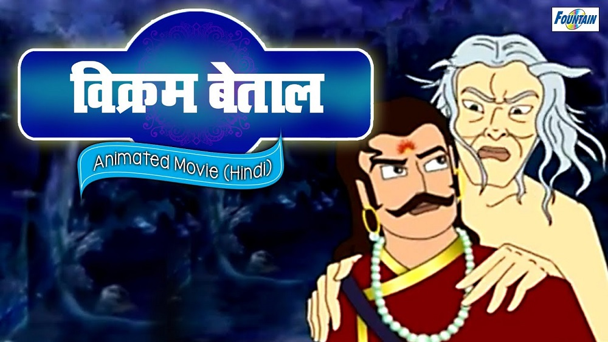

|
The exchanged headsOnce upon a time there lived a washerman named Dhavala. He once spotted a very beautiful lady at pond, who happened to be the daughter of another washerman. He instantly fell in love with her and pleaded with his parents to ask her parents for her hand in marriage. His parents did accordingly and the girl, Madanasundari, got married to him with her parents consent. She then went with Dhavala to live with him. Once the brother of Madanasundari, came to Dhavala to invite his sister and brother-in-law to their place for festival season. Dhavala agreed and the three of them were returning to Madanasundari's home. On the way they happened to pass by the temple of Durga Devi, the all powerful goddess of power. Her brother wanted to pay a visit to the goddess, and went to the temple. But as soon as he came near the goddess, he wanted to make a massive sacrifice to the goddess. So saying he cut his head off for the goddess. Madanasundari was worried and she then sent her husband to see what the matter was. On seeing the state of his brother-in-law, the husband was also moved deeply and he decided to offer his own head too to the goddess and cut his own head with hisscitmar. Madanasundari, after a long wait came and saw both her brother and husband lying on the ground and then decided to take her own life but asked the goddesss to get the same brother and husband in the next life. The goddess was pleased and stopped her from dying and asked her to join their heads and bodies and then she granted them life. In a hurry, Madanasundari, exchanged the heads of her brother and husband and was perplexed. Betaal stops and asks King Vikram asks this question: Who among the two is the husband of Madanasundari? Vikram replies with a lot of thought, "The body that carries her husband's head is is her husband. The head is the most important part of the human body, and the rest of the body is identified by the head." As soon as Vikram had finished his answer, Betaal disappeared back to the tree. |

| Previous | Index | Next |